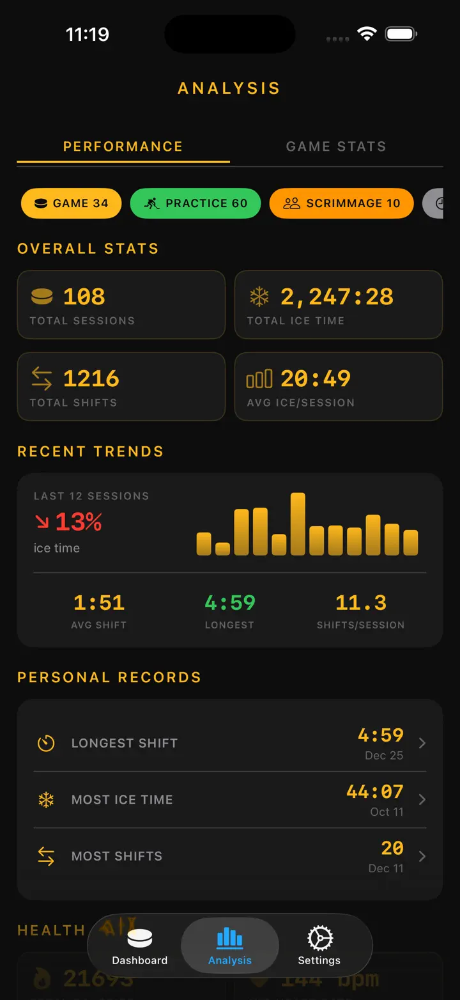

Ice Time Track
Hokej Střídání Trénink
Automatické sledování času na ledě s Apple Watch – nově se sledováním výstroje a připomínkami broušení bruslí. Po zápase si projděte střídání, statistiky a zdraví.
Stáhnout v App Storu
O aplikaci
Vaše střídání. Sledována automaticky.
Ice Time Track používá Apple Watch k rozpoznání, kdy bruslíte a kdy jste na střídačce. Žádná tlačítka, žádné starosti. Stačí spustit relaci a hrát.
JAK TO FUNGUJE
Náš algoritmus detekce pohybu analyzuje data z akcelerometru, gyroskopu a GPS, aby rozlišil bruslení od odpočinku. Váš iPhone synchronizuje živé aktualizace, takže můžete sledovat statistiky v reálném čase nebo po zápase.
FUNKCE
- Automatická detekce střídání, sledování pohybu a zdravotních metrik
- Celkový čas na ledě a rozpis po střídáních
- Záznam zápasu – góly, tresty, přestávky
- Tepová frekvence a kalorie za střídání
- Vizuální časová osa vzoru led/střídačka
- Historie relací s trendy
- Označení polohy pro každý zimní stadion
- Režimy zápas, trénink a přátelák
- Volitelná haptická upozornění
- Export dat do CSV nebo JSON
INTEGRACE APPLE
Funguje s Apple Watch. Synchronizuje se s Apple Health.
SOUKROMÍ
Všechna data uložena lokálně. Účet není vyžadován.
Vytvořeno hokejisty pro hokejisty. Poznejte svůj čas na ledě. Posuňte svou hru.
Ice Time Track promění vaše Apple Watch v inteligentního hokejového společníka, který přesně ví, kdy jste na ledě a kdy na střídačce. Žádná tlačítka. Žádné rozptylování. Čisté automatické sledování, abyste se mohli soustředit na nejlepší výkon.
JAK TO FUNGUJE
Spusťte relaci na Apple Watch a zapomeňte na ni. Naše pokročilá detekce pohybu analyzuje data v reálném čase. iPhone zůstává synchronizován s živými aktualizacemi – sledujte statistiky z tribuny nebo si vše prohlédněte po závěrečné siréně.
CO OBJEVÍTE
- Celkový Čas na Ledě — Přesně víte, kolik minut jste strávili tam, kde to počítá
- Rozpis po Střídáních — Každé střídání s délkou, tepovou frekvencí a kaloriemi
- Záznamy zápasů – góly/tresty podle třetin
- Sledování Tepu — Monitorujte úsilí při bruslení vs. regeneraci
- Spálené Kalorie — Přesná data synchronizovaná z Apple Health
- Časová Osa Relace — Vizuální graf vzoru led/střídačka
- Paměť Lokace — Automatické označení zimního stadionu
- Historické Trendy — Porovnejte relace a sledujte pokrok
PRO KAŽDÉHO BRUSLAŘE
Ať hrajete amatérskou ligu, tvrdě trénujete nebo soutěžíte v přátelácích – Ice Time Track se přizpůsobí. Označte relace podle typu, přidejte jména soupeřů a vytvořte si osobní hokejový deník.
BEZPROBLÉMOVÁ INTEGRACE APPLE
- Synchronizace tréninků s Apple Health
- Běží na pozadí během relací
- Volitelná haptická upozornění při přechodech led/střídačka
- Optimalizováno pro nízkou spotřebu baterie
SOUKROMÍ NA PRVNÍM MÍSTĚ
Vaše data zůstávají vaše. Uložena lokálně na vašich zařízeních. Žádné účty. Žádný prodej dat. Nikdy.
OD HRÁČŮ PRO HRÁČE
Vytvořeno milovníky hokeje unavenými z odhadování času na ledě. Reálná čísla. Reálné poznatky. Nulové tření.
Stáhněte nyní a už nikdy nepřemýšlejte o svém čase na ledě.
Zavažte brusle. Vhoďte puk. O zbytek se postaráme.
Privacy Policy: https://masawata.net/privacy-policy.html Terms Of Service: https://www.apple.com/legal/internet-services/itunes/dev/stdeula/
Snímky obrazovky





Ice Time Track
Automatické sledování času na ledě s Apple Watch – nově se sledováním výstroje a připomínkami broušení bruslí. Po zápase si projděte střídání, statistiky a zdraví.
Stáhnout v App Storu